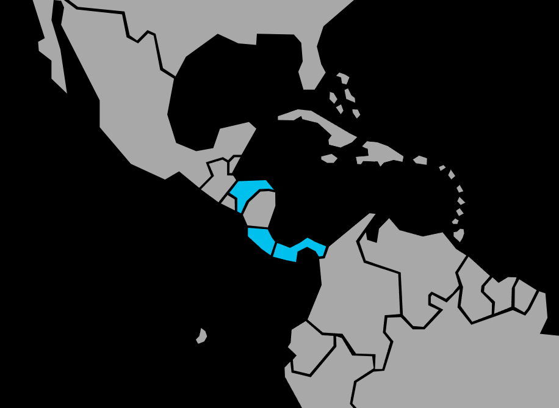

Systématique
- Ordre : Cichliformes
- Famille : Cichlidae
- Sous-famille : Cichlasomatinae
- Tribu : Heroini
- Genre : Parachromis
- Espèce : Parachromis managuensis
Parachromis managuensis, le Cichlidé jaguar, est un grand cichlidé prédateur d’Amérique centrale, réputé pour sa livrée mouchetée rappelant celle d’un félin.
Les mâles peuvent atteindre ou dépasser 35 cm en aquarium, les femelles restant un peu plus petites, ce qui impose un très grand volume de maintenance.
Espèce solitaire et très territoriale, elle occupe surtout la zone médiane et inférieure, patrouillant activement son territoire et chassant les proies plus petites qui s’y aventurent.
En période de reproduction ou dans un volume insuffisant, l’agressivité augmente fortement, ce qui rend la cohabitation délicate même avec d’autres grands cichlidés robustes.
Mode : pondeur sur substrat découvert ; le couple nettoie une pierre plate ou une zone dégagée, y dépose plusieurs centaines d’œufs puis assure une garde extrêmement vigilante.
Les parents défendent un large territoire, rassemblent les alevins en banc compact et peuvent les déplacer dans des cuvettes creusées dans le substrat, ce qui impose un bac spécifique durant cette phase.
Dimorphisme sexuel : mâle plus grand, avec nageoires impaires plus allongées et une coloration plus contrastée ; femelle plus petite, souvent plus ronde en période de ponte.
Espérance de vie : généralement 10–15 ans en captivité, avec un volume adapté, une alimentation riche mais contrôlée et une eau de bonne qualité.
L’espèce fréquente des lacs et rivières lentes du Honduras, du Nicaragua et du Costa Rica, souvent dans des eaux légèrement troubles, chaudes, avec substrat meuble et nombreuses caches rocheuses ou racines.
Répartition
Origine naturelle :
- Amérique centrale : Honduras, Nicaragua, Costa Rica.
- Présent notamment dans le lac Managua et des rivières associées.
L’espèce vit dans des eaux chaudes, assez profondes, avec un substrat meuble et de nombreux abris rocheux ou racines où elle peut établir et défendre un vaste territoire.
Paramètres de maintenance
Température : 24 à 28 °C.
pH : 7,0 à 8,0.
GH : 8 à 20 °dGH, eau moyenne à dure.
Courant : modéré, avec forte filtration et bonne oxygénation indispensables pour gérer la charge organique importante d’un grand prédateur.
Volume conseillé : ≥ 600 L pour un individu ou un couple, davantage en cas de cohabitation avec d’autres grands cichlidés.
Régime alimentaire
Régime : prédateur piscivore, acceptant poissons entiers (avec prudence), moules, crevettes, vers de terre et nourriture industrielle riche en protéines pour grands cichlidés.
Une alimentation variée mais distribuée avec parcimonie, en évitant les proies vivantes à risque sanitaire, permet de maintenir une bonne condition corporelle tout en limitant la pollution du bac.